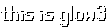
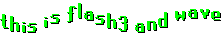
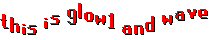
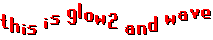
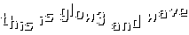
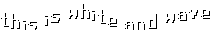

Chat Colors and Effects
In RuneScape, it's possible to change the color or effect of your text. Whether you're trying to buy a new weapon, or asking for help on a quest, the best way to make your message stand out is with colored text.Colors
Note: All the color names must be typed in lower case or they will not work.| Color Codes | |||
|---|---|---|---|
| Code | Effect | Example | Result |
| cyan: | Bright Blue Text | cyan:this is cyan |  |
| green: | Green Text | green:this is green | |
| purple: | Purple Text | purple:this is purple |  |
| red: | Red Text | red:this is red |  |
| white: | White Text | white:this is white |  |
Effects
Note: All the effect names must be typed in lower case or they will not work.| Effect Codes | |||
|---|---|---|---|
| Code | Effect | Result | |
| flash1: | Text cycles red to yellow quickly. | ||
| flash2: | Text cycles blue to cyan quickly. |  |
|
| flash3: | Text cycles green to light green quickly. |  |
|
| glow1: | Text fades red to blue. |  |
|
| glow2: | Text fades red to purple to blue. |  |
|
| glow3: | Text fades white to green to blue. |  |
|
| scroll: | Text scrolls right to left. | ||
| wave: | Text waves up and down. |  |
|
Combinations
You can have combinations of colors and text effects in your messages too. Colored text (cyan, green, purple, red, and white) can scroll, shake, slide, or wave. Flashing and glowing text effects may also have a scroll or wave effect added to them. When combining colors and effects, always have the color before the effect and do not put a space between the color colon and the first letter of the effect.| Combination Codes | |||
|---|---|---|---|
| Code | Result | ||
| cyan:scroll: | |||
| cyan:wave: | |||
| flash1:scroll: |  |
||
| flash1:wave: |  |
||
| flash2:scroll: |  |
||
| flash2:wave: | |||
| flash3:scroll: | |||
| flash3:wave: |  |
||
| glow1:scroll: | |||
| glow1:wave: |  |
||
| glow2:scroll: | |||
| glow2:wave: |  |
||
| glow3:scroll: |  |
||
| glow3:wave: |  |
||
| green:scroll: |  |
||
| green:wave: | |||
| purple:scroll: | |||
| purple:wave: | |||
| red:scroll: | |||
| red:wave: |  |
||
| white:scroll: | |||
| white:wave: |  |
||